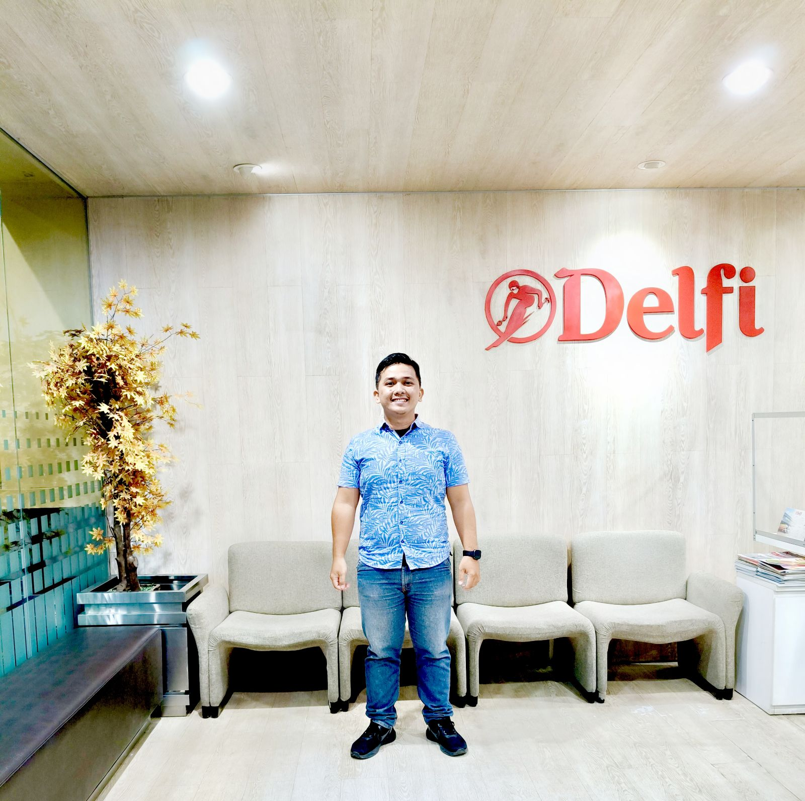
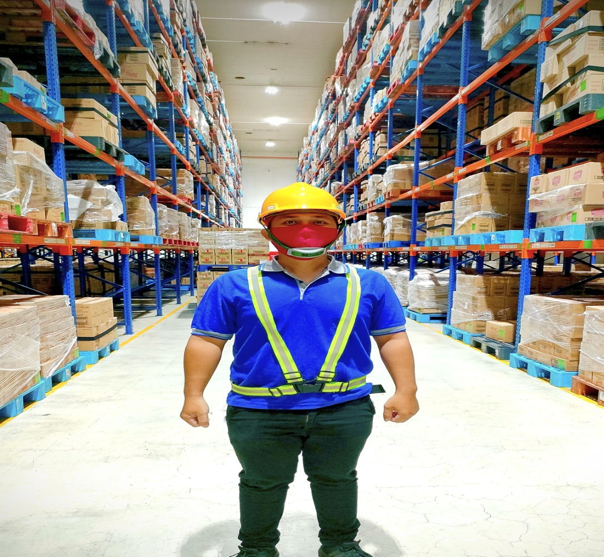
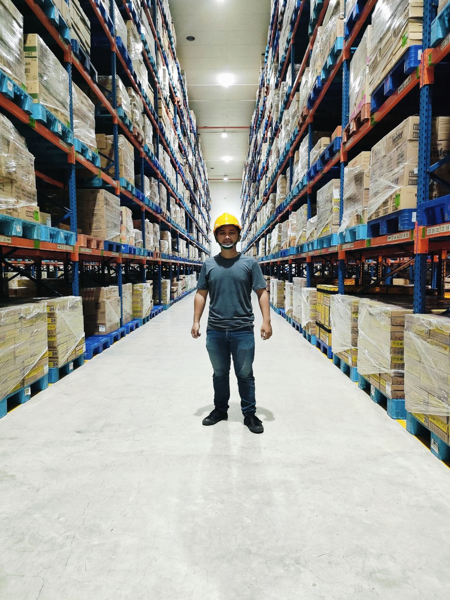

Berpengalaman di industri FMCG dalam mengelola data, proses logistik, sistem WMS, dan integrasi SAP dengan standar keamanan pangan ISO 22000:2018.
Lihat Pengalaman Saya


Seorang profesional Warehouse Staff Administrasi Logistik di perusahaan FMCG pada bidang makanan dan minuman. Terampil dalam mengelola dan menganalisis data, mengelola dokumen, data entry, proses logistik, sistem WMS dan mahir dalam mengoperasikan Microsoft Office (Word, Excel, Power Point), Spreadsheet, Aplikasi SAP dan kemampuan sebagai Web Programmer junior.
Tanggung Jawab Utama:
Penguasaan mendalam dalam penggunaan SAP untuk proses logistik end-to-end, mulai dari SO, DO, Good Receipts (GR), Transfer Order (TO), hingga Return Management.
Terbiasa menangani pelaporan dokumen legal seperti web Bea Cukai CK-6 Ceisa 4.0, Proof of Delivery (POD), faktur, serta audit stok (Stock Opname).
Mampu mengelola dan menganalisis data menggunakan Ms. Excel & Spreadsheet. Memiliki kemampuan dasar pengembangan website sebagai Junior Web Programmer.
Tertarik untuk berdiskusi mengenai peluang kerja atau kolaborasi? Jangan ragu untuk menghubungi saya melalui kontak di bawah ini.
Email: email.anda@domain.com
LinkedIn: linkedin.com/in/nama-anda
Kirim Email Sekarang